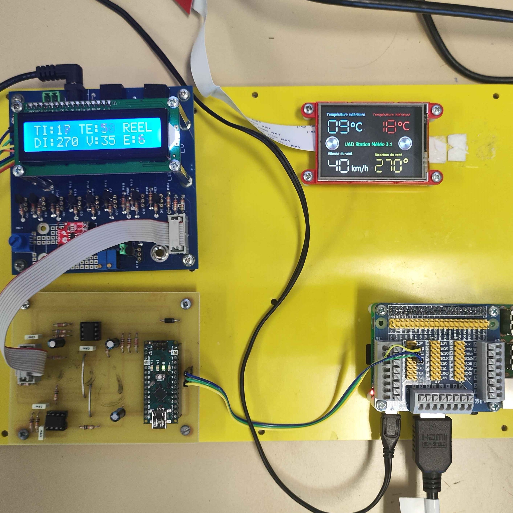
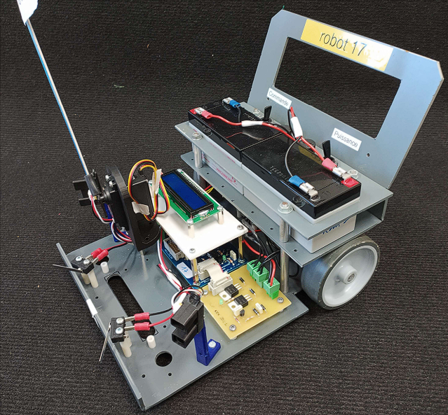

BUT GEII - 2ᵉ année
SAÉ 6 : Programmation d’automate

Développement de programmes industriels en environnement automatisé.
Utilisation du langage Ladder et GRAFCET, tests sur banc didactique,
analyse fonctionnelle et validation du comportement du système.
SAÉ 5 : Armoire électrique

Conception et réalisation d’une armoire industrielle.
Lecture de schémas, câblage, respect des normes de sécurité
et mise en service du système.
SAÉ 4 : UAD station météo
Système de génération, d'acquisition et de stockage de données météorologiques simulées.
Ce système est composé de 3 élements principaux :
- La carte SIMCAP (SIMulation CAPteurs), qui génère 4 signaux météorologiques : température intérieure, extérieure, vitesse et direction du vent.
- La carte MICAP (MIse en forme CApteurs), qui filtre et traite les signaux avant de les convertir en données numériques. Une Raspberry Pi 3, qui récupère les données de la MICAP via I2C afin de les délivrer à l'utilisateur sous différentes formes (tableau CSV, affichage sur écran tactile, site web, liaison TTL avec un pc, etc)
- La carte SIMCAP (SIMulation CAPteurs), qui génère 4 signaux météorologiques : température intérieure, extérieure, vitesse et direction du vent.
- La carte MICAP (MIse en forme CApteurs), qui filtre et traite les signaux avant de les convertir en données numériques. Une Raspberry Pi 3, qui récupère les données de la MICAP via I2C afin de les délivrer à l'utilisateur sous différentes formes (tableau CSV, affichage sur écran tactile, site web, liaison TTL avec un pc, etc)
BUT GEII - 1ʳᵉ année
Concours de robotique

Conception d'une version miniature améliorée des robots Linéa
Logique séquentielle, temporisation, gestion des états et sécurités.
SAÉ 3 : Feu tricolore

Automatisation d’un carrefour routier.
Logique séquentielle, temporisation, gestion des états et sécurités.
SAÉ 2 : Linéa

Conception d'un robot suiveur de ligne
Objectifs :
- Concevoir, fabriquer, mettre au point 2 carte, l'une permettant la commande de 2 moteurs à courant continu via ponts en H et l'autre permettant au robot de suivre une ligne via capteurs optiques réflectifs.
- Programmation d'un PIC18F2520 (langage C) permettant de mettre en œuvre le robot afin de répondre aux différentes demandes.
- Concevoir, fabriquer, mettre au point 2 carte, l'une permettant la commande de 2 moteurs à courant continu via ponts en H et l'autre permettant au robot de suivre une ligne via capteurs optiques réflectifs.
- Programmation d'un PIC18F2520 (langage C) permettant de mettre en œuvre le robot afin de répondre aux différentes demandes.
SAÉ 1 : Pilomo
Projet d’initiation à la robotique mobile.
Objectifs :
- Concevoir, fabriquer, mettre au point une carte permettant la commande de 2 moteurs à courant continu via MOSFETs.
- Programmation de l'arduino nano (langage C++) permettant de mettre en œuvre le robot afin de répondre aux différentes demandes.
- Concevoir, fabriquer, mettre au point une carte permettant la commande de 2 moteurs à courant continu via MOSFETs.
- Programmation de l'arduino nano (langage C++) permettant de mettre en œuvre le robot afin de répondre aux différentes demandes.